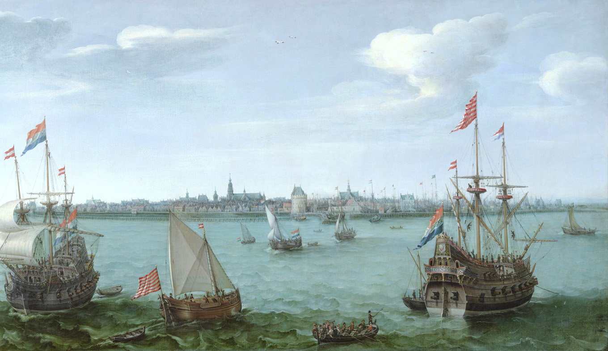

Roman Empire
The History of the Netherlands is a history of seafaring people thriving on low riverland in northwestern Europe on the North Sea. The country formed an armed border to the Roman Empire for four centuries, preventing the Roman Empire to invade and rule over their land. Then the country came under even more pressure from the East, where the Germanic people came from. After the Roman Empire fell, As Roman power collapsed and the Middle Ages began, three Germanic peoples settled in what is now the Netherlands, the Frisians in the north and on the coat, Low Saxons in the northeast, and the Franks in the south.
Middle Ages
After the Roman Empire fell, the Middle Ages started. The region that is nowadays the Netherlands was split up into lordships such as Holland, Brabant, Friesland, Guelders and Zeeland. At the time there was no such thing as the Netherlands. The different lordships were very divided.
Rule of Spain
During the 16th Century the King of Spain ruled took over power in what is now Belgium and the Netherlands The Catholic kings of Spain fought against Protestantism, which went against the people that lived in the area. A Dutch revolt started in 1566 when they attacked protestant Churches. This revolt eventuallly led to the splitting in 1581 of the Netherlands into a Catholic, French- and Dutch-speaking "Spanish Netherlands", and a northern "Dutch Republic", which spoke Dutch and was predominantly Protestant. The Dutch Republic became the modern Netherlands. This Spanish rule over the Dutch Republic resulted in the Eighty Years' War.
Golden Age
The Dutch Golden Age was a very important period in the history of the Netherlands, roughly spanning the era from 1581 to 1672, the "Disaster Year" (or in Dutch: rampjaar). In this era trade, science, art and the Dutch military were among all one of the best in the world. The first section is characterized by the Eighty Years' War, which ended in 1648. The transition by the Netherlands to becoming the foremost maritime and economic power in the world is called "Dutch Miracle".
18th Century
During the eighteenth century, the power, wealth and influence of the Netherlands declined. Wars with the more powerful Brittain and France hit the Dutch Republic hard. The United Kingdom traded the North American colony of New Amsterdam, now New York, for Suriname, a country in the north of South America where plantations were profitable at the time. The French Revolution started in 1789, and a pro-French Batavian Republic was established in around the year 1800. Napoleon made it an independent, but French state, the Kingdom of Holland. Later this Kingdom became a French ruled province.
World War I and II
The Netherlands were neutral during the First World War, so the country wasn't affected much. The second World War was a completely different story. Nazi Germany invaded and occupied the Netherlands within 6 days. The Dutch militairy wasn't developed and after the Germans bombed 2 cities, the Queen Wilhelmina had no choice but to surrender and she fled along with the royal family to the United Kingdom. The Nazis arrested and killed almost all of the country's Jewish population in German or Polish concentration camps. When the Dutch resistance increased, the Nazis cut off food supplies to much of the country, causing severe starvation in the winter of 1944–45. The Dutch had to survive on a diet that consisted of mostly if not only plant bulbs. The Dutch weren't just involved in war on their mainland, but in the Dutch East Indies as well, where they were fighting off the Japanese. In 1942, Japan conquered the Dutch Colonies Indonesia proclaimed its independence from the Netherlands in 1945. The post-war years saw rapid economic recovery, helped by the American Marshall Plan.